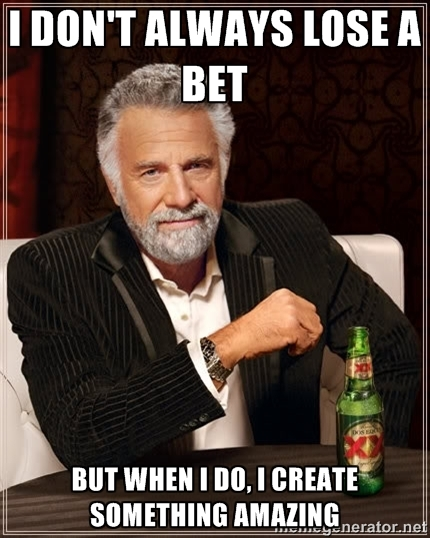

HTML enhanced for web apps!
A backstory...
In 2009...

What is AngularJS?
MVW JavaScript Framework
Principles
Structure
Source: http://theconstructor.org/structural-engg/analysis/structural-design-process/1673Testability
Source: http://cartoontester.blogspot.com/2012/02/testability-explained.htmlD.R.Y.
Source: http://phillihp.com/2011/06/22/learn-object-oriented-php-ruby/Hello, Angular!
Hello, {{name}}
Anatomy of the 'Hello, Angular' App
Our First Controller
HTML Code
<html ng-app="todoApp">
<body ng-controller="TodoCtrl">
-
</body>
</html>
JS Code
var app = angular.module('todoApp', []);
app.controller('TodoCtrl', function($scope){
$scope.todos = [
{ text: 'Create presentation', done: true },
{ text: 'Send email', done: false }
];
});
Upgraded Todo Application
- Strikethrough of completed tasks
- Add new task
- Clear Completed
HTML Code
JS Code
$scope.addTask = function() {
$scope.todos.push( { text: $scope.newTask, done: false } );
$scope.newTask = "";
}
$scope.clearCompleted = function() {
$scope.todos = $scope.todos.filter(function(todo) {
return !todo.done;
})
}
Testability
Test for addTask()
it('+1 task when adding task', function() {
var controller = createController(),
todosLen = $scope.todos.length;
$scope.newTask = 'Aha!';
$scope.addTask();
expect($scope.todos.length).toEqual(todosLen + 1);
expect($scope.todos[todosLen].text).toEqual('Aha!');
});
Test for clearCompleted()
it('remove completed items', function() {
var controller = createController(),
todosLen = $scope.todos.length;
$scope.newTask = 'Aha!';
$scope.addTask();
$scope.todos[todosLen].done = false;
$scope.clearCompleted();
expect($scope.todos.length).toEqual(todosLen + 1);
});
Imperative vs. Declarative
HTML Code
Summer Photos!

{{slide.text}}
JS Code
var app = angular.module('directivesApp', ['ui.bootstrap']);
app.controller('MyCtrl', function($scope){
$scope.alertType = 'success';
$scope.slides = [
{ active: true, image: 'images/summer1.jpg', text: 'Summer 1' },
{ active: false, image: 'images/summer2.jpg', text: 'Summer 2' },
{ active: false, image: 'images/summer3.jpg', text: 'Summer 3' },
{ active: false, image: 'images/summer4.jpg', text: 'Summer 4' },
];
});
Float Label Design Pattern
AngularJS is awesome
but, it may NOT always be the best approach...
- Lots of AJAX
- UIs that have complex interactions
- Single-Page Application Architecture
There are other MV* frameworks

AngularJS is still awesome!